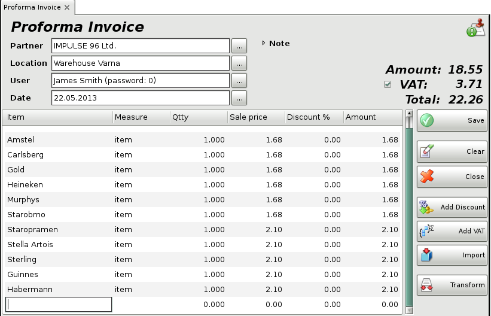

button and the prices will be
automatically recalculated.
button and the prices will be
automatically recalculated.Proforma Invoice
The Proforma invoices module is used to generate a sample sale of selected items to a particular partner. Proforma invoices usually precede sales and determine transaction parameters (price, quantities, amounts and bank accounts) precisely. Proforma invoices do not change quantities of items in stock and no incomes or expenses are generated. They are used only as a template for the transaction. Proforma invoices can be automatically transformed into Sales .
To fill in the Proforma Invoice window do the following:
In the Partner field fill in the name of the
customer/company, to which the proforma invoice is issued.
To select a
partner do one of the following:
- use keyboard shortcut F4 in the
partners list;
- use the Enter key in the partners list;
-
double-click the partner in the list;
- type the name of the partner in the
text field;
- type the code of the partner in the text field.
In the Location field fill in the name or code
of the location from which items will be taken.
To select a location do one
of the following:
- use keyboard shortcut F4 in the locations
list;
- use the Enter key in the locations list;
- double-click
the location in the list;
- type the name of the location in the text
field;
- type the code of the location in the text field.
In the User field fill in the name of the user,
who will perform the operation.
To select a user do one of the
following:
- use keyboard shortcut F4 in the users list;
- use
the Enter key in the users list;
- double-click the user in the
list;
- type the user�s name in the text field;
- type the user�s code in
the text field.
In the Item field fill in the items, which
will be bought.
To select an item do one of the following:
- use keyboard
shortcut F4 in the items list;
- type the name of the item in the
text field;
- double-click the item in the list;
- type the code of the
item in the text field;
- type the barcode of the item in the text field.
In the Date field fill in the date of the
document.
Select the date in the Calendar window by pressing
the F4 key or by double-clicking in the text field.

If you wish to select more than one item, open the items list by pressing the F4 key, hold down the Ctrl key and click the desired items. You can select adjacent items by holding down the Shift key and using the arrow keys.
In the Qtty column fill in the number of items being purchased. Press Enter to move on to the Sale Price column and fill in the sale price of the item (if no price group has been selected). Press Enter to confirm. The application automatically fills in the Amount column. Use the same method to enter data about each item bought by the customer. To save the document, press the F9 key. To cancel the operation, press the Esc key.
If you are working with prices with VAT included, but wish to enter sale
prices of items without VAT, to save the data correctly in the database,
select button and the prices will be
automatically recalculated.
If you are working with prices without VAT and you enter prices with VAT
included, the application will automatically recalculate the prices
using  button.
button.
Through the button Import, you can select the file, which will be imported in the program. This file contains all the items and their parameters for the operation.

Through the button Transform the particular proforma invoice might be transformed in other operation.

If you are working with lots, you may enter a lot number, a serial number, manufactured and expiration dates and location of each lot in the warehouse in the sale window. Then enter a sale quantity and press Enter. The application will split the quantity by lots, depending on the method set in operations settings. In case you do not provide lot information, the Lot column is filled in automatically with "NA".

If you are working with Choice item management method, then after entering a sale quantity and pressing Enter, the application will open a window that contain all available lots for the selected item. Select a lot and press Enter or click OK button. Then the lot will fill in the sale window.

When you save the operation, the application may offer you to print the sales document, depending on the Print Settings.
�2006-2015 Microinvest, All rights reserved